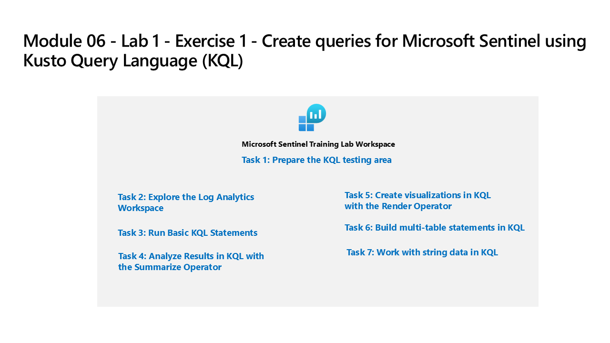

Built KQL query skills using the Microsoft Sentinel Training Lab workspace and Microsoft Learn exercises. Covered basic statements through advanced multi-table joins, data visualization, and string manipulation — all foundational skills for writing detection rules and hunting queries in Sentinel.

Lab architecture diagram — Source: MicrosoftLearning/SC-200T00A-Microsoft-Security-Operations-Analyst, MIT License
Tasks Completed
Connected to the Microsoft Sentinel Training Lab workspace in Log Analytics
Explored workspace tables and reviewed available log data schemas
Ran basic KQL statements: take, count, let, where, project, sort, top
Used the summarize operator to aggregate data by field values and time bins
Created data visualizations using the render operator (timechart, barchart, piechart)
Built multi-table statements using join and union operators
Worked with string data using extract, parse, split, and strcat functions
Connected to Log Analytics resources and ran introductory KQL queries via Microsoft Learn exercises
Used the take operator and count to return and evaluate row sets from security tables
Environment: Employer-provided Azure subscription (resources deleted after lab).